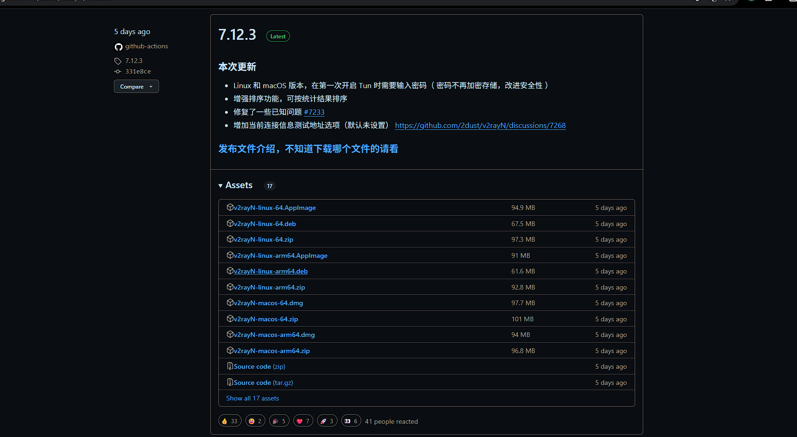
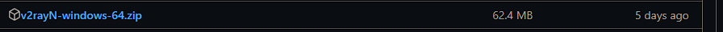

V2Ray，是Victoria Raymond以及其社区团队开发的Project V下反审查工具。Project V是一个工具集合，号称可以帮助其用户打造专属的基础通信网络。Project V的核心工具称为V2Ray，
其主要负责网络协议和功能的实现，与其它Project V通信。V2Ray可以单独运行，也可以和其它工具配合，以提供简便的操作流程。开发过程主要使用Go语言，Core采用MIT许可证并开放源代码。
在中国大陆，本工具广泛用于突破防火长城，访问被其封锁和屏蔽的内容。
v2rayN Github数据库:https://github.com/2dust/v2rayN
点击右边的Releases(发行版)
找到Latest(最新版)--左键点击下面Show all 17 assets(显示全部 17 项)
找到图中的windows64版本,之后解压就可以正常使用了